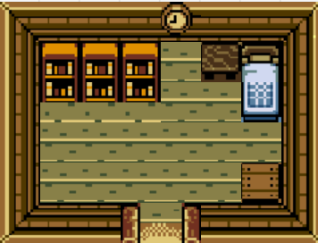

- Introduction
- 1. Starting Out
- 2. Why Tiles?
- 3. Map Format
- 4. Creating Tiles
- 5. Map Tools
- 6. The Hero
- 7. Keys To Move
- 8. Hit The Wall
- 9. Open The Door
- 10. Jumping
- 11. Clouds
- 12. Simple Enemy
- 13. Shooting
- 14. Getting Items
- 15. Scrolling
- 16. Depth
- 17. Ismetric View
- 18. Mouse To Move
- 19. More Tiles
- Published with GitBook
On Your Own
Now that we've covered how to create and draw a tile based map, it's time for you to play around a bit on your own. This challenge is going to test your understanding of creating tile based maps. You will need to create a single room. Try your best to write all the code for this setion from scratch, only use the code from the last section if you get stuck.
New Project
Create a new project, call it TilePractice and make the standard window appear. Don't forget to set your working directory correctly. Follow the instructions of this chapter in the new solution.
Tile Object
Make yourself a tile object. This can be extremly similar to the tile object from the CreatingTiles section. You do not need to worry about things like scale or walkability. Your tile needs to keep track of:
- Sprite Instance
- Source Rectangle
- World Position
Tile map
We are going to be re-using the Assets/HouseTiles.png sprite sheet for this project. It should already be in your shared Assets directory, assuming you set your working path correctly you shouldn't event need to add anything. Here is a position breakdown of each tile:

There are a lot of different ways to represent a tile map in memory, i strongly urge you to use the method we used in CreatingTiles. That is make a multidimensional array for the map layout, which indexes into two regular arrays for the sprite sheet names and sprite regions on the sheets.
Goal
Given the above information try to recreate this room:

Make sure that your window is a tight fit to the room
Extra Credit
This next part is optional, i suggest doing it as the extra practice tends to help.
Create another new solution, call it TilePractice2, repeat everything you just did, except instead of re-creating my room design design your own room using the sprite sheet. The room can be as big or as small as you want it to be.
Checkin
Before moving onto the next section check in with me. I want to look over the code for both CreatingTiles and TilePractice